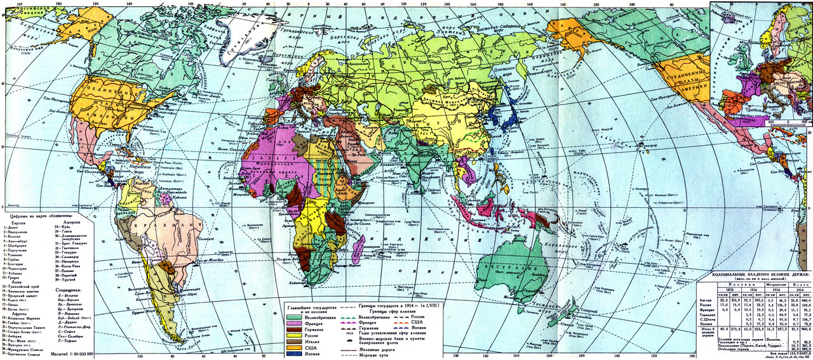

Здравствуйте, Алина Резуановна. Этот сайт написал я, Закураев Эльдар.
Здесь находится конспект §1.На фронтах Первой мировой войны
Главы:
Предпосылки и причины войны
Военные действия в 1914г.
"Великое отступление"
Брусиловский пролив
Внутриполитическое положение России в 1914–1916 гг.

Термины
Военно-промышленные комитеты
"Министерская чехарда"
Прогрессивный блок
Исторические лица
А.А.Брусилов
Г.Е.Распутин
П.Н.Милюков
Карта мира
Важные даты:
28 июня 1914г
— убийство Франца Фердинанда
1 августа 1914г
— Германия объявила войну России, начало Первой мировой войны
4 августа — 2 сентября 1914г
— Восточно-Прусская операция
Август — сентябрь 1914г
— Галицийская битва
Апрель — август 1915г
— отступление российской армии из Польши и Галиции
23 августа 1915г
— Николай II принял пост Верховного главнокомандующего
Август 1915г
— создание Прогрессивного блока
22 мая — 31 июля 1916г
— Брусиловский прорыв русских войск